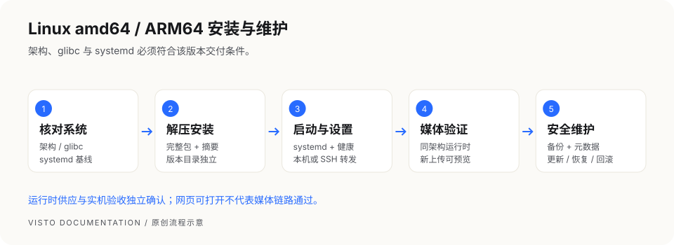

VISTO USER GUIDE / 07
Linux amd64 / ARM64 安装与维护
本章面向使用 systemd 的 glibc Linux 主机 的维护者，按当前 Linux 打包与 Unix 运维脚本编写。amd64 与 ARM64 共用步骤，安装包不能混用。正式包、发行版支持和媒体运行时供应以对应 Release 为准；源码里存在安装脚本不代表最终 Linux 包已通过实机验收。


1. 核对系统和架构
uname -m
getconf GNU_LIBC_VERSION
systemctl --version
| 检查项 | 当前交付契约基线 | 如何选择 |
|---|---|---|
uname -m 为 x86_64 |
Linux amd64 | 使用 linux-amd64.tar.gz |
uname -m 为 aarch64 |
Linux ARM64 | 使用 linux-arm64.tar.gz |
| C 库 | glibc ≥ 2.28 | musl / Alpine 不在本原生说明范围 |
| 服务管理器 | systemd ≥ 239 | 无 systemd 的 NAS、容器或 WSL 不照搬本章 |
| 内核 | ≥ 4.18 | 最终发行版支持以 Release 为准 |
上述为项目当前契约要求，不代表每个满足版本号的发行版均已验收。准备 sudo 权限、Bash、GNU tar、常用系统工具，以及 curl 和 SHA-256 工具。不要为安装程序替换系统 C 库；不符合基线时使用受支持主机，或按 Docker 章节和发布支持范围选择容器部署。
2. 下载并核对摘要
获取同版本的安装包、SHA-256 和说明。下列 1.0.3 为格式示例，替换为实际版本；ARM64 把包名中的 amd64 改为 arm64。
sha256sum Visto-Server_1.0.3_linux-amd64.tar.gz
逐字对照可信发布页的 64 位摘要。不要从另一个包、架构或版本复制摘要。来源或摘要不明时停止。更新时还要准备同版本清单。
3. 解压并安装
在独立、尚未使用的本机目录解压；下面命令不在现有程序目录上覆盖文件：
mkdir -p "$HOME/visto-install-1.0.3"
tar -tzf Visto-Server_1.0.3_linux-amd64.tar.gz
tar -xzf Visto-Server_1.0.3_linux-amd64.tar.gz -C "$HOME/visto-install-1.0.3"
cd "$HOME/visto-install-1.0.3"
ls bin web scripts
sudo bash scripts/install-visto-server.sh \
--version 1.0.3 \
--source-dir "$PWD"
解压后应有 bin/visto-core、bin/visto-server、web/index.html、完整维护脚本及许可声明。安装器复制程序到版本目录、生成受保护配置、注册并启动 systemd 服务。缺文件、架构错误或版本目录已存在时先排查，不加覆盖参数绕过。
默认 systemd 服务使用专用非登录账号 visto。组件与配置由管理员持有，服务不能写入；业务数据由服务账号持有。额外本机媒体目录需要管理员明确授予该账号所需读写权限，不能通过把服务改回 root 来解决。
首次安装默认监听 127.0.0.1:8787。需要不同端口时，安装命令可增加 --address 127.0.0.1:8788；之后所有检查与代理都用实际端口。已经部署的实例不能用再次安装同版本来做更新。
4. 确认服务与浏览器入口
sudo systemctl status visto.service --no-pager
curl -fsS http://127.0.0.1:8787/health/ready
sudo /opt/visto/current/bin/visto-server --address 127.0.0.1:8787 status
服务 active 后还需健康检查成功、页面可打开。服务器有浏览器时打开 http://127.0.0.1:8787/。如果是无桌面的远程主机，自己电脑里的 127.0.0.1 指向自己电脑，并不指向服务器。
有 SSH 权限的维护者可临时把远端回环端口转到本机，用于首次设置和诊断：
ssh -N -L 18787:127.0.0.1:8787 "<你的SSH用户>@<服务器地址>"
保持连接，在自己电脑浏览器打开 http://127.0.0.1:18787/。尖括号内容必须替换；此通道只供授权维护者使用，日常成员和客户使用正式 HTTPS 工作空间地址。首次设置令牌默认在 /etc/visto/host-management-token，由主机管理员私下读取使用，勿公开配置内容。
5. 安装后的目录地图
| 内容 | 默认位置 | 维护方式 |
|---|---|---|
| 程序版本 | /opt/visto/releases/<版本> |
各版本独立保存 |
| 当前程序 | /opt/visto/current |
指向当前版本，不手动替换 |
| 配置 | /etc/visto/visto.env |
系统管理员维护，包含秘密 |
| 数据 | /var/lib/visto |
数据库、秘密、目录内上传与预览 |
| 备份 | /var/backups/visto |
归档与同名元数据 |
| 日志 | systemd 239 使用 journal；240 及以上使用 /var/log/visto/server.log、server.err |
排查启动与处理错误 |
| 服务定义 | /etc/systemd/system/visto.service |
安装器生成 |
| 媒体运行时根 | /var/lib/visto-runtime |
使用当前版本支持的运行时工具管理 |
如果安装时使用自定义数据目录或部署覆盖变量，记录真实路径，维护命令也要匹配该实例，不能假定所有主机都用默认值。外部媒体根权限与服务沙箱需要一致；系统管理员应按实际存储方案配置，不通过关闭全部服务保护来解决读写问题。
6. 视频预览与媒体运行时
Linux Server 的当前打包脚本生成主程序、网页和维护工具，不在该脚本内自动打入 FFmpeg。页面打开后仍需核对视频处理运行时。
此次交付选择 Linux .2 视频组件，两种架构均按 glibc 2.28 重建并检查依赖闭包。ARM64 已在 Ubuntu 24.04 原生客体及 Rocky 8.10 ARM64 模拟客体执行；x86_64 已在 Rocky Linux 8.10（glibc 2.28、systemd 239、SELinux 启用）执行原生生命周期及正式根签名安装、编码和篡改拒绝检查。具体覆盖范围以发布清单为准，不据此承诺所有 Linux 发行版。旧 Linux 组件分别需要较新的 glibc，不能拿来替代本次固定组合。本次固定 .2 归档、正式签名清单及对应源码已经公开可下载，并已核对摘要与正式根签名。历史使用临时 QA 签名的记录保留；此次正式信任验证另行记录，不把旧 QA 签名结果冒充正式签名通过。
以下步骤独立下载固定公钥，并核对内容；也可从本次完整公开交付取得同一公钥。无需安装 Node.js、Go 或克隆内部仓库。不能使用下载归档自带的公钥代替可信根。
(
set -eu
case "$(uname -m)" in
aarch64) RUNTIME_VERSION=ffmpeg-8.1.2-linux-arm64-lgpl.2 ;;
x86_64) RUNTIME_VERSION=ffmpeg-8.1.2-linux-amd64-lgpl.2 ;;
*) echo '不支持的架构'; exit 1 ;;
esac
RUNTIME_BASE="https://visto-server-updates.pages.dev/media-runtime/$RUNTIME_VERSION"
mkdir -p "$HOME/visto-runtime-install"
curl -fL "$RUNTIME_BASE/media-runtime-manifest.json" \
-o "$HOME/visto-runtime-install/manifest.json"
curl -fL "$RUNTIME_BASE/media-runtime-manifest.json.sig" \
-o "$HOME/visto-runtime-install/manifest.json.sig"
curl -fL 'https://dl.819101.xyz/server/candidates/20261001/media-runtime-root-public-key.txt' \
-o "$HOME/visto-runtime-install/public-key.txt"
test "$(cat "$HOME/visto-runtime-install/public-key.txt")" = 'lMcaxJOtCeDaiJgeW0S5Gh/m3PYQ4WG7ijIs9yxVZ2M=' || { echo '公钥不符，停止安装'; exit 1; }
sudo /opt/visto/current/bin/visto-server --json media-runtime install \
--media-runtime managed \
--manifest "$HOME/visto-runtime-install/manifest.json" \
--signature "$HOME/visto-runtime-install/manifest.json.sig" \
--public-key "$(cat "$HOME/visto-runtime-install/public-key.txt")" \
--non-interactive --confirm-download
sudo systemctl restart visto.service
sudo /opt/visto/current/bin/visto-server --json media-runtime status
curl -fsS http://127.0.0.1:8787/health/ready
)
任何下载、签名、摘要或探测失败均停止；不要忽略错误继续重启。成功后确认组件状态和 health/ready 的 ffmpeg、ffprobe 都是 true。自定义实例必须让主机工具与服务使用相同 VISTO_MEDIA_RUNTIME_ROOT；默认实例为 /var/lib/visto-runtime。旧安装若配置仍指向 /opt/visto/media-runtime 或 /var/lib/visto/runtime，先按实际配置指定相同根，不能把两个目录混用。
运行时安装后重启服务，上传小型测试视频，等待处理完成、播放预览并提交时间点评论；再验证一份图片。只有这些业务步骤成功，才能确认该实例的媒体链路可用。
7. 启停、日志和诊断
sudo systemctl stop visto.service
sudo systemctl start visto.service
sudo systemctl restart visto.service
sudo journalctl -u visto.service -n 100 --no-pager
sudo tail -n 100 /var/log/visto/server.err
sudo /opt/visto/current/bin/visto-server --data-dir /var/lib/visto doctor
systemd 239 使用 sudo journalctl -u visto.service -n 100 --no-pager 查看日志，文件日志步骤只用于 systemd 240 及以上。
服务启动失败时先读日志，再检查配置和依赖；不要反复重装或删除数据。日志可能含路径和用户信息，提供求助材料前脱敏。服务修改配置后需重启；网页中的业务设置按页面反馈判断保存是否完成。
8. 备份并验证覆盖范围
sudo /opt/visto/current/scripts/backup-visto-server.sh
也可在独立备份磁盘上指定保存目录，须确认磁盘已挂载且容量足够：
sudo /opt/visto/current/scripts/backup-visto-server.sh --backup-dir /mnt/backup/visto
脚本先证明服务停止，再归档数据目录并生成数据库事实元数据，之后启动服务。只有归档和元数据均成功生成才算本次备份完成。备份放另一磁盘或可信远程位置；外部媒体、WebDAV、S3、/etc/visto 的部署配置另行备份。迁移到新主机还涉及恢复路径约束，不能直接承诺跨主机/跨目录恢复。
9. 更新、恢复与回滚
更新使用实际下载的包、摘要和同版本清单。示例输入需全部替换：
sudo /opt/visto/current/scripts/update-visto-server.sh \
--package '/实际路径/Visto-Server_1.0.3_linux-amd64.tar.gz' \
--sha256 '<发布页公布的64位SHA-256>' \
--manifest '/实际路径/该版本的清单.json'
上面示例为 x86_64；ARM64 使用同版本的 Visto-Server_1.0.3_linux-arm64.tar.gz 和该文件对应摘要，不能混用架构。
脚本验证布局，准备新版本、备份数据、停服并切换 current，失败时尝试还原。没有清单时停止，不手工改 current 或覆盖运行中的程序。更新成功后检查旧数据与新上传，不只看进程。
恢复先跑只读检查；示例归档名替换为真实备份：
sudo /opt/visto/current/scripts/restore-visto-server.sh \
--backup-file '/var/backups/visto/实际备份.tar.gz' --check-only
sudo /opt/visto/current/scripts/restore-visto-server.sh \
--backup-file '/var/backups/visto/实际备份.tar.gz' --confirm-restore
恢复会替换当前实例数据，先另做当前数据备份。归档与同名元数据必须一起保留，只支持检查认可的原数据目录；旧格式元数据或路径不符被拒绝时，不手改元数据。
回滚程序版本先检查保留的版本：
sudo ls /opt/visto/releases
sudo /opt/visto/current/scripts/rollback-visto-server.sh \
--to-version '<仍保留的版本号>' --confirm-rollback
回滚程序不等于把数据库和媒体恢复到任意历史时刻。数据兼容性与恢复需求要分别判断；目标版本已清理或数据不兼容时联系维护者。成功后重新检查健康、登录、媒体与分享。
10. 网络与常见问题
默认 Core 仅监听回环。日常远程访问用受维护的 HTTPS 反向代理，再在工作空间配置外部访问地址；不要直接把 8787 暴露到公网。防火墙开放的是代理入口，浏览器里的本机地址不能发给客户。
| 现象 | 先检查 | 处理方向 |
|---|---|---|
Exec format error |
uname -m 与安装包架构 |
换同架构完整包 |
| glibc 版本错误 | getconf GNU_LIBC_VERSION |
换受支持系统，不替换系统 C 库 |
| 找不到 systemctl | 主机是否真正使用 systemd | 选择符合基线主机，或按 Docker 支持范围部署 |
| 安装缺网页/脚本/声明 | 解压根目录与包完整性 | 用完整包，不分别下载文件拼装 |
| 服务启动失败 | journalctl、server.err |
查地址占用、配置、目录权限与运行依赖 |
| 端口被占用 | sudo ss -ltnp 'sport = :8787' |
查明占用者，选择其它端口，不盲目杀进程 |
| 上传不能写或空间不足 | 实际存储权限、挂载和 df -h |
修复真实存储条件，保留已有数据 |
| 视频无预览 | 同架构运行时、处理任务状态 | 核对运行时供应和安装结果 |
| SSH 转发打不开 | SSH 连接、远端健康、本机端口 | 分别确认两端，不改为公网裸端口 |
| 停服检查/恢复预检被拒绝 | 相关子进程、元数据与来源目录 | 保留现场，解决原因后再试，不绕过保护 |
11. 卸载与最终检查
sudo bash /opt/visto/current/scripts/uninstall-visto-server.sh
默认停止并注销服务、移除程序发布目录，保留用户数据、备份和日志。停服失败会中止卸载，保留服务配置和程序；看到 could not be stopped 时先检查服务或进程，解决原因后再试，不手工删除服务配置。卸载前另存配置和完整备份；--keep-releases 可保留程序版本。--purge-data 会额外删除数据和备份目录，只有明确永久清除并确认独立备份可恢复时才使用，不能当排障步骤。
交付清单：安装架构正确；整机重启后健康成功；首次设置与权限正确；图片与视频预览通过；真实存储可读写；外部 HTTPS 分享可达；备份归档与元数据已独立保存；更新和恢复在对应平台受控验证。当前候选已在 x86_64 Rocky 8.10 与 ARM64 Ubuntu 24.04 客体执行安装、媒体、恢复及整机重启检查；ARM64 Rocky 8.10 的兼容补验在完整模拟客体执行。模拟客体结果不代表真实 ARM64 服务器硬件通过。